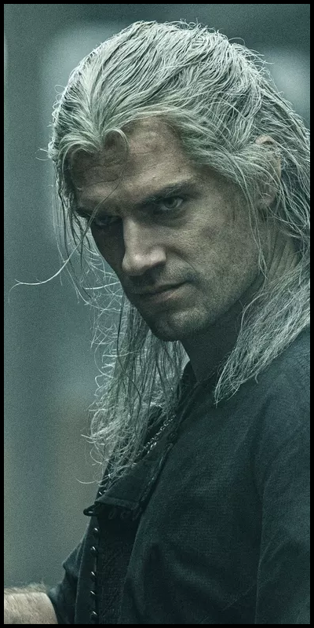
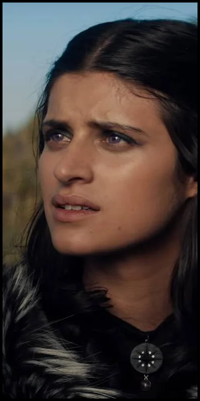
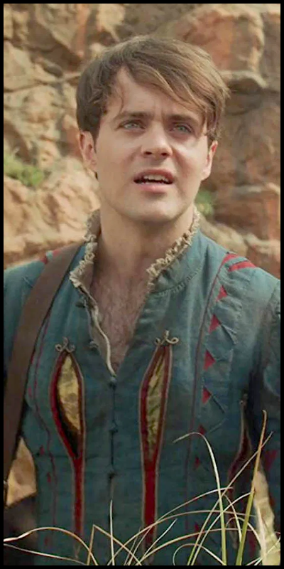
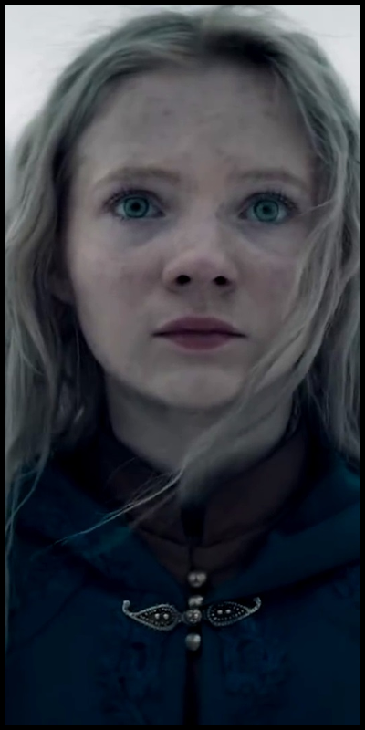

Ekranizacją przygód Geralta zajął się Netflix
Serial przedstawia wydarzenia z książki
Obecnie można zobaczyć jedynie 1 sezon serialu, jednak po sukcesie jaki odniosła premiera grudniem 2019 roku wydawca zapowiedział kolejne sezony
Główne role
   
Od lewej: Geralt-Henry Cavill Yennefer-Anya Chalotra Jaskier-Joey Bartey Ciri-Freya Allan